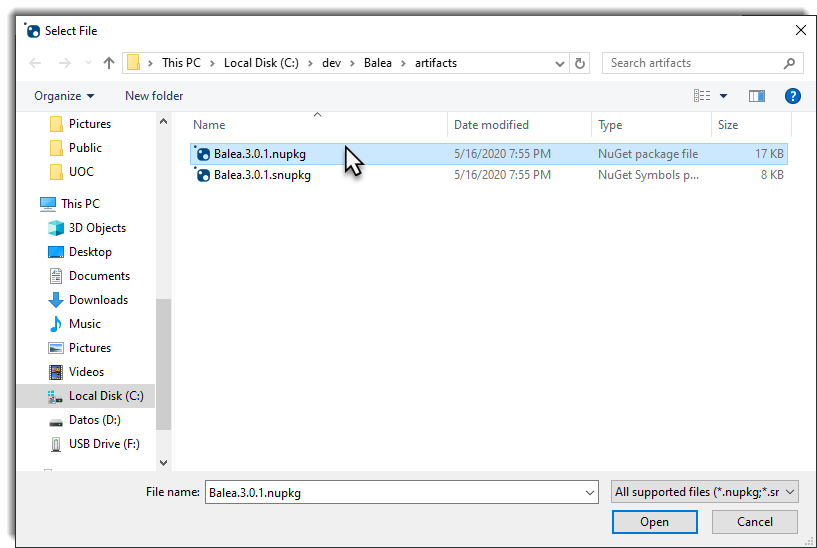

As a maintainer of some Open Source projects in Xabaril that lot of people use, I think it’s crucial to help developers to debug the source code in order to make their lifes easier when troubleshoting problems. For this reason in Xabaril we have decided to enable support for Source Link in our open source projects to embrace this practice.
I actually want to give kudos to Unai Zorrila to teach me how to configure Source Link in Balea.
What is Source Link?
Basically, Source Link is a technology that enables developers to debug the source code from the NuGet packages, so tools like Visual Studio can step into its source code given an amazing experience in order to troubleshoting problems when you are using open source projects.
Using Source Link in .NET Core projects
I don’t know if you are familiar with dependencies.props file in your .NET Core projects, if not, I recommend the use of this file from now.
Dependencies.props declares any dependency that you’ll need through your entire solution helping us to avoid problems such us consolidating versions of NuGet packages because we are defining the versions in one place and each project define which dependency it needs:
<PropertyGroup Label="Package Dependencies">
<AspNetCoreVersion>3.1.3</AspNetCoreVersion>
<EntityFrameworkVersion>3.1.3</EntityFrameworkVersion>
</PropertyGroup>
In your csproj you need to define which dependency needs:
<ItemGroup>
<PackageReference Include="Microsoft.Extensions.Http.Polly" Version="$(AspNetCoreVersion)" />
</ItemGroup>
So, if the ASP.NET Core team release a new version you don’t need to go through all projects one by one upgrading the version, you’ll only need to update the version in your dependency.props and those projects that reference it will be upgrading to use it.
Another file you should be familiar is Directory.Build.props which fairly easy to share commom metadata across your solution.
<Project>
<Import Project="build/dependencies.props" />
<PropertyGroup Label="Package information">
<PackageLicenseExpression>Apache-2.0</PackageLicenseExpression>
<PackageProjectUrl>http://github.com/xabaril/Balea</PackageProjectUrl>
<RepositoryUrl>https://github.com/xabaril/Balea</RepositoryUrl>
<Authors>Xabaril Contributors</Authors>
<Company>Xabaril</Company>
</PropertyGroup>
</Project>
In the first line, we are importing the dependencies.props file and also adding some commom metadata to share across all projects such license information, project url, etc.
After a brief introduction to these files, we are going to enable Source Link in our project. You’ll need to add these lines to your Directory.Build.props
<!-- Publish the repository URL in the built .nupkg (in the NuSpec <Repository> element) -->
<PublishRepositoryUrl>true</PublishRepositoryUrl>
<!-- Embed source files that are not tracked by the source control manager in the PDB -->
<EmbedUntrackedSources>true</EmbedUntrackedSources>
<!-- Build symbol package (.snupkg) to distribute the PDB containing Source Link -->
<IncludeSymbols>true</IncludeSymbols>
<SymbolPackageFormat>snupkg</SymbolPackageFormat>
For projects hosted in GitHub you’ll need to reference the Source Link package:
<ItemGroup>
<SourceRoot Include="$(MSBuildThisFileDirectory)/"/>
<PackageReference Include="Microsoft.SourceLink.GitHub" Version="$(MicrosoftSourceLinkGithub)">
<PrivateAssets>all</PrivateAssets>
<IncludeAssets>runtime; build; native; contentfiles; analyzers</IncludeAssets>
</PackageReference>
</ItemGroup>
Next, you’ll have to enable Deterministic build. In this repo Claire Novotny explains how deterministic build .NET works and why are so important:
Deterministic builds are important as they enable verification that the resulting binary was built from the specified source and provides traceability.
You’ll need to add this to your Directory.Build.props if you are using GitHub:
<PropertyGroup Condition="'$(GITHUB_ACTIONS)' == 'true'">
<ContinuousIntegrationBuild>true</ContinuousIntegrationBuild>
</PropertyGroup>
There is a well known issue with the EmbedUntrackedSources attribute that could be fix with the below workaround needed for many SDK’s prior to 3.1.300 (At the moment I write this post 3.1.201). Add a new file called Directory.Build.targets at the solution level with the content below:
<Project>
<PropertyGroup>
<TargetFrameworkMonikerAssemblyAttributesPath>$([System.IO.Path]::Combine('$(IntermediateOutputPath)','$(TargetFrameworkMoniker).AssemblyAttributes$(DefaultLanguageSourceExtension)'))</TargetFrameworkMonikerAssemblyAttributesPath>
</PropertyGroup>
<ItemGroup>
<!-- https://github.com/dotnet/sourcelink/issues/572 -->
<EmbeddedFiles Include="$(GeneratedAssemblyInfoFile)"/>
</ItemGroup>
</Project>
If you want to test your packages in your local machine prior to publish in the NuGet feed, please remove the conditional for the GitHub actions:
<PropertyGroup>
<ContinuousIntegrationBuild>true</ContinuousIntegrationBuild>
</PropertyGroup>
Run the next command to pack your project:
dotnet pack <yoor_project>.csproj -c Release -o .\artifacts --include-symbols
And the NuGet package should be generated:
Open NuGet Package Explorer and select “Open a local package”
Find your NuGet package:

And you should see that Source Link and Deterministic build are valid.
It’s time to add again the conditional for GitHub actions that you removed previously to test in your local machine and push the changes to your repository. You’ll need to have a GitHub Action to publish your packages to the NuGet feed. Once the package has been published, open again NuGet Package Explorer but this time select “Open a package from online feed”
Search your package:
And if you have followed all the previous steps correctly, your package should be valid and reflect the last commit to your repo:
Configuring Visual Studio 2019 to use Source Link
By default NuGet Symbols server are disabled. Visual Studio 2019 needs to be able to download these sources in order to works properly with Source Link. Go to Tools -> Options -> Debugging -> Symbols
Go to Tools -> Options -> Debugging -> General settings window and disable “Enable Just My Code”
By default Source Link is enable in Visual Studio 2019 but Source Server support not:
Fallback to Git Credential Manager… allows tools that use Git Credential Manager to use Source Link in private repositories.
Step into third party code
In my case, I’ve created a simple WebApi application and I’ve added Balea’s packages:
Run the web application and click F11 to Step Into:
A new popup window appears for the first time if Source Link won’t download the source code.
Once the source code was downloaded by Source Link, we can step into the source code:
If you want to see a full example of this post, I recommend you to take a look at this repo
Conclusion
In this post I’ve try to show you how to configure Source Link in .NET projects and how to use into the Visual Studio.


Comments